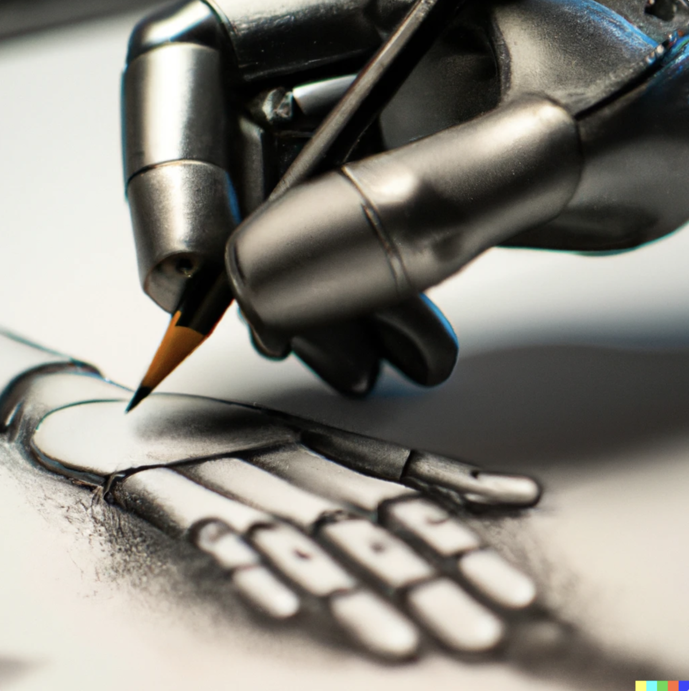

Today we did a research launch of DALL•E 2, a new AI tool that can create and edit images from natural language instructions.
Most importantly, we hope people love the tool and find it useful. For me, it’s the most delightful thing to play with we’ve created so far. I find it to be creativity-enhancing, helpful for many different situations, and fun in a way I haven’t felt from technology in a while.
But I also think it’s noteworthy for a few reasons:
1) This is another example of what I think is going to be a new computer interface trend: you say what you want in natural language or with contextual clues, and the computer does it. We offer this for code and now image generation; both of these will get a lot better. But the same trend will happen in new ways until eventually it works for complex tasks—we can imagine an “AI office worker” that takes requests in natural language like a human does.
2) It sure does seem to “understand” concepts at many levels and how they relate to each other in sophisticated ways.
3) Copilot is a tool that helps coders be more productive, but still is very far from being able to create a full program. DALL•E 2 is a tool that will help artists and illustrators be more creative, but it can also create a “complete work”. This may be an early example of the impact AI on labor markets. Although I firmly believe AI will create lots of new jobs, and make many existing jobs much better by doing the boring bits well, I think it’s important to be honest that it’s increasingly going to make some jobs not very relevant (like technology frequently does).
4) It’s a reminder that predictions about AI are very difficult to make. A decade ago, the conventional wisdom was that AI would first impact physical labor, and then cognitive labor, and then maybe someday it could do creative work. It now looks like it’s going to go in the opposite order.
5) It’s an example of a world in which good ideas are the limit for what we can do, not specific skills.
6) Although the upsides are great, the model is powerful enough that it's easy to imagine the downsides.
Hopefully this summer, we’ll do a product launch and people will be able to use it for all sorts of things. We wanted to start with a research launch to figure out how to minimize the downsides in collaboration with a larger group of researchers and artists, and to give people some time to adapt to the change—in general, we are believers in incremental deployment strategies. (Obviously the world already has Photoshop and we already know that images can be manipulated, for good and bad.)

(A robot hand drawing, by DALL•E)